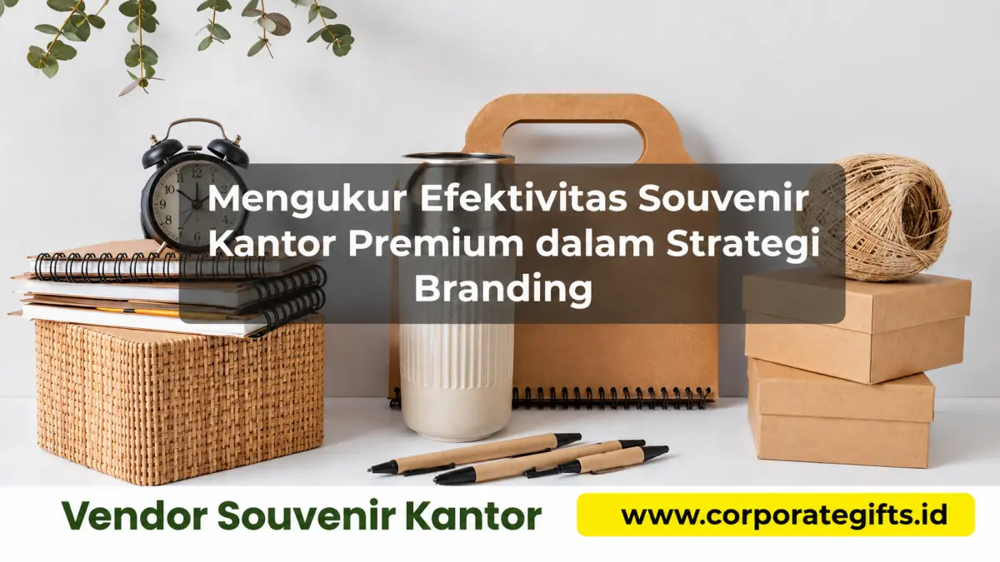

Corporate Gifts ID - Efektivitas souvenir kantor premium dalam strategi branding diukur melalui lima indikator utama: brand recall, client engagement, customer loyalty index, word of mouth, dan estimasi Return on Investment (ROI). Mengombinasikan survei umpan balik penerima, pemantauan data interaksi bisnis lanjutan, serta social listening memberikan gambaran objektif apakah investasi cinderamata benar-benar memperkuat posisi tawar perusahaan. Tanpa evaluasi terukur, perusahaan berisiko membuang anggaran tanpa memahami dampak nyatanya terhadap citra dan retensi kemitraan.
Poin Kunci Pengukuran Efektivitas Souvenir Kantor:
- 5 Metrik Utama: Meliputi daya ingat merek (brand recall), keaktifan interaksi klien, indeks loyalitas, rekomendasi organik, dan estimasi ROI finansial.
- Mencegah Anggaran Mubazir: Pengukuran berkala memastikan hanya produk dengan retensi dan utilitas tertinggi yang dipesan kembali pada periode berikutnya.
- Pendekatan Riset Terpadu: Menggabungkan kuesioner digital singkat, data perpanjangan kontrak B2B, dan pemantauan media sosial.
- Nilai Guna sebagai Kunci: Barang yang dipakai berulang kali di ruang publik menghasilkan eksposur merek gratis berkesinambungan.
- Sinkronisasi Momen: Menyelaraskan distribusi cinderamata dengan momentum prestisius seperti penandatanganan MoU atau perayaan tahunan.
Mengapa Pengukuran Efektivitas Souvenir Penting bagi Perusahaan?
Banyak korporasi dan institusi mengalokasikan ratusan juta rupiah setiap tahunnya untuk pengadaan cinderamata kantor. Namun, sebagian besar berhenti pada tahap pembagian barang tanpa pernah menganalisis timbal balik yang dihasilkan. Akibatnya, pengadaan souvenir kantor eksklusif kerap dianggap sebagai pos biaya pengeluaran (expense) semata, bukan investasi modal branding.
Padahal, menerapkan pengukuran efektivitas yang sistematis memberikan 4 keuntungan kompetitif:
- Menghindari Pemborosan Anggaran: Menghentikan pemesanan jenis merchandise yang terbukti tidak disukai atau berakhir di tempat sampah oleh penerima.
- Memperoleh Insight Berharga untuk Kampanye Berikutnya: Mengetahui secara pasti jenis produk, warna, dan material mana yang paling diapresiasi oleh jajaran eksekutif klien.
- Memperkuat Dasar Keputusan Manajemen: Memberikan data kuantitatif yang solid saat mengajukan rencana anggaran belanja (RAB) tahunan ke divisi keuangan dan direksi.
- Menyempurnakan Posisi Branding: Memastikan nilai visual logo dan pesan korporat yang tercetak selaras dengan persepsi prestise yang diharapkan pasar.
5 Indikator Kunci (KPI) dalam Mengukur Efektivitas Souvenir Premium
Untuk mengevaluasi performa merchandise korporat secara terukur, tim HRD, Marketing, dan Public Relations dapat mengacu pada 5 Key Performance Indicators (KPI) berikut:
1. Brand Recall (Tingkat Ingatan Merek)
Indikator ini mengukur seberapa cepat dan kuat klien mengingat nama perusahaan Anda ketika mereka membutuhkan solusi produk atau jasa di masa mendatang. Souvenir fungsional yang berada di atas meja kerja - seperti smart tumbler suhu, wireless charger dock, atau agenda kulit - menjadi jangkar memori visual yang sangat ampuh.
2. Engagement Klien dan Kemitraan Bisnis
Melihat apakah terjadi kenaikan frekuensi komunikasi, kemudahan dalam membuat janji temu baru, peningkatan repeat order, atau percepatan penutupan kontrak kemitraan pasca-pemberian paket souvenir VIP.
3. Customer Loyalty & Retention Index
Mengukur retensi akun klien strategis. Hadiah korporat yang dipersonalisasi dengan nama klien terbukti menurunkan angka perpindahan klien (churn rate) ke kompetitor secara signifikan karena membangun kedekatan emosional profesional.
4. Word of Mouth (Rekomendasi Organik)
Menilai apakah klien menceritakan pengalaman positif mereka menerima cinderamata tersebut kepada kolega industri mereka. Rekomendasi antar-pimpinan bisnis adalah saluran pemasaran dengan tingkat konversi tertinggi.
5. Media Exposure & Social Impressions
Souvenir dengan kemasan unboxing yang memukau sering kali diunggah secara sukarela oleh penerima ke platform profesional seperti LinkedIn atau Instagram Stories. Ini menghasilkan tayangan merek organik bernilai tinggi tanpa tambahan biaya sponsor.

Tracking data keterlibatan klien dan survei kepuasan menjadi fondasi utama dalam mengukur return on investment souvenir kantor.
Matriks Indikator Kinerja (KPI) dan Tolok Ukur Keberhasilan Souvenir
Tabel berikut merangkum tolok ukur standar yang dapat diadopsi perusahaan dalam mengevaluasi efektivitas merchandise promosi:
| Indikator Kinerja (KPI) | Parameter Pengukuran | Metode Riset & Pengumpulan Data | Benchmark Target Keberhasilan |
|---|---|---|---|
| Brand Recall & Recognition | Persentase klien yang ingat brand tanpa pancingan | Survei email singkat (H+30 hari) | > 75% penerima mengingat brand pengirim |
| Client Engagement Rate | Responsivitas follow-up & pertemuan lanjutan | CRM tracking interaksi tim sales/account manager | Kenaikan interaksi > 25% pasca-distribusi |
| Utilitas & Retensi Pemakaian | Frekuensi barang digunakan di kantor | Kuesioner evaluasi kepuasan produk | Dipakai minimal 3-4 kali per minggu |
| Organic Social Advocacy | Unggahan konten sukarela di LinkedIn/Instagram | Social media monitoring & brand tagging | > 15% penerima VIP membagikan unboxing |
| Estimasi Nilai ROI | Rasio nilai kontrak baru berbanding biaya paket | Analisis perbandingan revenue akun klien | Nilai revenue 5x - 10x lipat biaya souvenir |
4 Metode Praktis Mengumpulkan Data Efektivitas Souvenir
Mengumpulkan data evaluasi tidak harus rumit atau memakan waktu. Terapkan empat langkah metodologi praktis berikut:
- Survei Kepuasan Digital Singkat: Kirimkan tautan kuesioner Google Form atau Typeform berdurasi 1 menit berisi 3 pertanyaan esensial: kepuasan kualitas barang, kegunaan dalam rutinitas kerja, dan daya tarik visual logo.
- Tracking Aktivitas CRM (Customer Relationship Management): Pantau riwayat transaksi pada software CRM perusahaan. Amati apakah akun klien yang dikirimi hampers atau gift set VIP memiliki tingkat perpanjangan kontrak lebih tinggi dibanding akun tanpa souvenir.
- Social Listening: Gunakan alat pemantauan media sosial untuk melacak penyebutan nama merek atau foto produk souvenir yang dibagikan secara sukarela oleh karyawan mitra.
- Sesi Wawancara Kasual Tim Sales: Tugaskan tim account executive untuk menanyakan secara langsung tanggapan klien saat jadwal kunjungan kerja rutin.
Cara Mengoptimalkan Strategi Souvenir Berdasarkan Data
Setelah data evaluasi terkumpul, lakukan penyesuaian operasional untuk memaksimalkan dampak pengadaan di masa depan:
- Eliminasi Produk Berperforma Rendah: Hentikan pengadaan barang yang terbukti jarang digunakan seperti gantungan kunci akrilik atau miniatur dekoratif statis.
- Lipatgandakan Anggaran pada Item Primadona: Alokasikan anggaran lebih besar untuk produk berdaya tahan tinggi dari katalog souvenir kami, seperti power bank nirkabel, set pena logam berukir laser, atau smart tumbler stainless steel.
- Perkuat Sentuhan Personalisasi: Tambahkan inisial nama penerima pada permukaan produk untuk melipatgandakan ikatan psikologis penerima terhadap hadiah tersebut.
- Tepatkan Momentum Distribusi: Bagikan souvenir pada tonggak pencapaian penting kemitraan, perayaan tahun baru bisnis, atau penutupan proyek besar, bukan pada saat acak.
Pertanyaan Seputar Efektivitas Souvenir Kantor Premium (FAQ)
Kesimpulan & Rekomendasi Solusi Pengadaan
Souvenir kantor premium bukan sekadar barang bingkisan pelengkap acara, melainkan instrumen investasi branding strategis yang mampu melipatgandakan reputasi bisnis Anda bila dievaluasi secara terukur. Dengan memantau indikator seperti brand recall, engagement rate, dan kepuasan penerima, perusahaan Anda dapat menjamin bahwa setiap rupiah anggaran yang dikeluarkan menghasilkan dampak positif bagi pertumbuhan bisnis.
Untuk mewujudkan pengadaan merchandise korporat yang presisi, eksklusif, dan memiliki daya tahan promosi jangka panjang, bermitralah dengan CorporateGifts.ID. Tim ahli kami siap membantu Anda mulai dari kurasi produk terbaik hingga visualisasi mockup logo secara gratis.

Ditulis oleh: Arinda Zakia
Senior Corporate Gifting SpecialistSpesialis strategi souvenir promosi korporat, kurasi paket seminar kit terpadu, dan hampers eksekutif B2B dengan pengalaman lebih dari 7 tahun mendampingi ratusan instansi pemerintah dan perusahaan multinasional di Indonesia.
Lihat Profil Lengkap & Panduan Lainnya